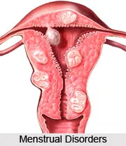
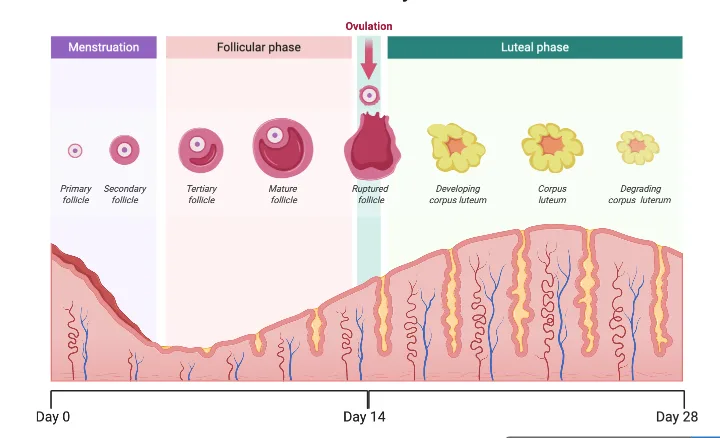
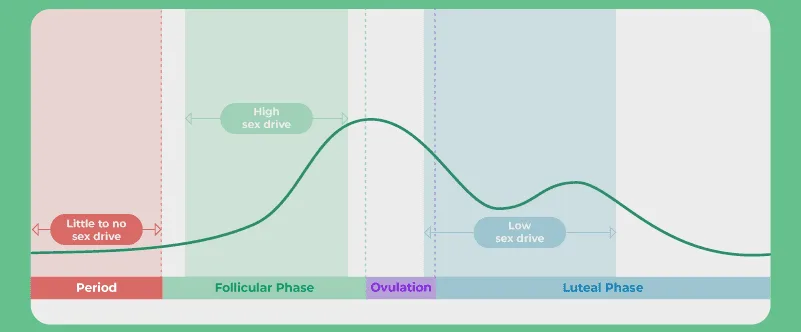
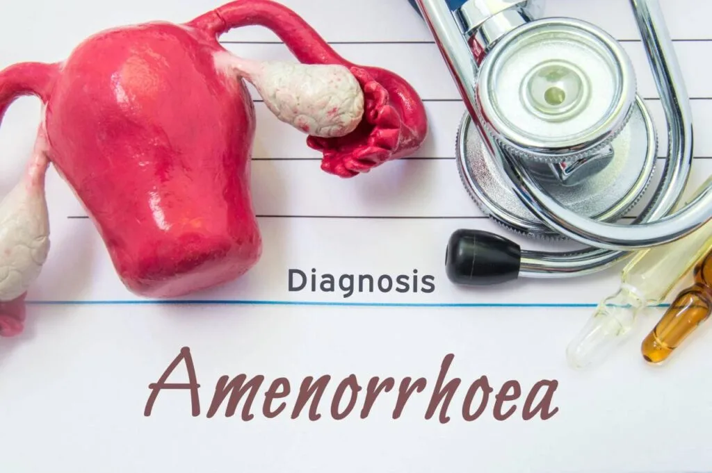

Expanded Nursing Uganda Explanation
Menstruation & Menstruation Disorders should be understood beyond a short definition. Link the concept to patient history, focused assessment, common risks, nursing priorities, documentation and evaluation of outcomes.
01 MENSTRUATION DISORDERS
Common disorders associated with menstruation are as follows;
- Amenorrhoea
- Dysmenorrhoea
- Menorrhagia
- Metrorrhagia
- Polymenorrhagia (epimenorrhoea)
- Dysfunctional uterine bleeding
- Endometriosis
02 MENSTRUATION
The normal period of menstruation usually lasts 2-7 days with a total blood loss of
10 – 80 ml is considered normal.
The normal menstruation cycle has a length of 21-35 days.
03 THE MENSTRUATION CYCLE
The events occur under the influence of hormones produced by pituitary glands(Follicle Stimulating Hormone – FSH and Luteinizing hormone – LH) and the ovaries (Progesterone & Oestrogen).
The menstrual cycle is divided into 3 phases namely:
- Follicular phase
- Ovulatory phase
- Luteal phase
This is marked by the beginning of menstruation.
- Bleeding results from the decrease in the levels of oestrogen and progesterone from the luteal phase.
- The reduction in oestrogen and progesterone leads to the shedding of the endometrium.
- During this phase, Follicle stimulating hormone (FSH) from the anterior lobe of the pituitary gland rises to stimulate the growth of several ovarian follicles with each follicle containing an ovum.
- Later, FSH levels reduce which leads to only one dominant follicle developing.
- The dominant follicle then produces oestrogen hormone.
This begins with a sharp rise in the levels of LH and FSH.
- The luteinizing hormone stimulates ovulation at about the 14th day of the menstrual cycle (between the 7th – 21st day depending on the cycle length).
- The oestrogen levels reach a peak and progesterone levels begin to rise once the ovum has been released.
- What is left behind of the dominant follicle after ovum release is referred to as the corpus luteum and it is the one that produces progesterone.
Luteal phase usually occurs after ovulation.
- During this phase, the endometrium begins to thicken in preparation for nourishment of an embryo in case fertilization takes place.
- If fertilization doesn’t occur, the increasing levels of oestrogen and progesterone decrease the production of both luteinizing and follicle stimulating hormones.
- Since the maintenance of corpus luteum depends on the luteinizing hormone, a decrease in its production causes the corpus luteum to atrophy leading to a reduction in the production of oestrogen and progesterone.
- The thickened uterine lining then begins to slog off and menstruation begins.
- And the follicular phase begins to complete the menstrual cycle.
04 Factors that may interfere with menstrual cycle thereby causing menstrual disorders
1. Physical conditions such as trauma, tumors, and diseases of the glands, ovaries, and uterus can impact the normal functioning of the reproductive system, potentially causing menstrual irregularities.
2. Debilitating diseases such as tuberculosis (TB) and HIV/AIDS can affect overall health, potentially disrupting the menstrual cycle.
3. Malnutrition can lead to hormonal imbalances, affecting the regularity of menstrual periods.
4. Dysfunctional uterine bleeding , which involves abnormal bleeding patterns, can be a contributing factor to menstrual disorders.
5. Age plays a role, as menstruation can be irregular in young girls after menarche (the first occurrence of menstruation).
6. Pregnancy naturally alters the menstrual cycle, and complications during pregnancy can lead to menstrual irregularities.
7. Certain drugs and exposure to X-rays, especially radiography, can impact hormone levels and disrupt the menstrual cycle.
8. Menopause , with its gradual onset, marks the end of the reproductive years and can cause significant changes in menstrual patterns.
9. The use of intrauterine contraceptives (IUCs) can also affect menstrual regularity in some women.
10. Extreme stress and worries , such as those experienced during times of war or conflict, can disrupt hormonal balance and impact the menstrual cycle.
11. Anxiety and mental health conditions can influence hormone levels, potentially leading to menstrual irregularities.
12. Environmental changes , such as transitioning to a new school or significant shifts in routine, can impact stress levels and, in turn, affect the menstrual cycle.
13. The stage of adolescence is a period of significant hormonal changes, and this transition can lead to menstrual irregularities as the body adjusts to these fluctuations.
05 AMENORRHOEA
Click Here
06 Nursing Uganda Clinical Lens
Use Menstruation & Menstruation Disorders as a practical nursing topic, not only a memorized definition. Start with normal structure and function, then connect it to assessment findings and disease.
- What to understand first: define menstruation & menstruation disorders, identify the normal or expected pattern, then explain what changes when the patient is unwell.
- Why it matters in care: the nurse must recognize risk early, explain findings clearly, document accurately and know when to escalate.
- How to revise it: connect each point to assessment, nursing diagnosis or care problem, intervention, rationale and evaluation.
07 Assessment Guide
- Relevant inspection, palpation, movement, auscultation, vital signs or neurological checks.
- Normal findings, abnormal findings and what each abnormality may indicate.
- Patient history, risk factors and how the body system affects other systems.
08 Nursing Priorities, Rationales and Outcomes
- Use anatomy to explain symptoms and guide focused assessment.
- Recognize findings that need urgent escalation.
- Teach the patient using simple body-system language.
The rationale for these priorities is patient safety: nursing actions should prevent deterioration, reduce discomfort, support recovery and create clear evidence for the next caregiver.
- Expected outcome: The learner can explain normal function, identify abnormal signs and connect them to nursing action.
09 Patient Teaching and Revision Check
- Explain menstruation & menstruation disorders in simple language the patient or caregiver can repeat back.
- Teach warning signs, medicine or follow-up instructions, hygiene or lifestyle points where relevant.
- For exams, prepare a short answer using: definition, causes or risk factors, signs, assessment, management, complications and prevention.
- For ward practice, document baseline findings, actions taken, patient response and the plan for review.
Illustrations and Diagrams (9)






1 more diagram available — open the lesson for full illustrations.
Related Video Lectures
Watch nursing lecture videos on YouTube for this topic. Opens in a new tab.
Watch on YouTubeExternal link: YouTube may use its own cookies and terms. Nursing Uganda is not affiliated with YouTube.